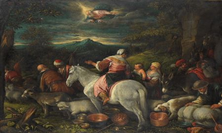

Şanlıurfa, eski ve halk arasındaki kısa adıyla Urfa, Türkiye'nin bir ili ve en kalabalık sekizinci şehri. 2020 Yılı verilerine göre nüfusu 2.115.256’dir.Şanlıurfa, 19.451 km2'lik yüz ölçümü ile Türkiye'nin en büyük yedinci ilidir.
Halk hikâyelerinde İbrahim peygamber ve Nemrud hikâyelerine konu olmuş, peygamberler şehri ve kutsal şehir gibi tanımlamalarla anılmış olan şehrin Nemrud tarafından kurulduğuna inanılmıştır. Milattan önce I. binden başlayarak Asurlular, Medler, Persler, Makedonyalılar, İskender'in varisleri olan Selevkoslar ile Osroene krallıklarının ardından Roma ve Bizans İmparatorluklarının hakimiyeti altında kalan şehir Hristiyanlık tarihi açısından önemli bir yere sahip olup Süryani kültürünün merkezi konumundaydı. Urfa, 7. yüzyılda Müslüman Araplar tarafından fethedildikten sonra bu özelliğini yavaş yavaş kaybetse de ciddi bir Süryani ve Ermeni nüfus şehirde 20. yüzyılın başlarına kadar varlığını korumuştur. 1516'da Osmanlı padişahı Yavuz Sultan Selim'in Memlükleri Mercidâbık Savaşında yenmesiyle Osmanlı hakimiyeti altına giren şehir 1919 yılında önce İngilizler ve ardından Fransızlar tarafından işgal edilene kadar kesintisiz 400 sene Osmanlı idaresinde kaldı. Şehir 11 Nisan 1920'de işgalden kurtarıldı ve 20 Ekim 1921'de TBMM ve Fransız Hükûmeti arasında imzalanan Ankara Antlaşması ile Türkiye'ye bırakıldı. Cumhuriyet sonrasında 1924 yılında il haline getirildi. Urfa milletvekili Osman Doğan ve 17 arkadaşının, Kurtuluş Savaşı'nda gösterdiği kahramanlıktan dolayı Urfa ilinin adının Şanlıurfa olarak değiştirilmesine ilişkin kanun teklifinin TBMM tarafından 12 Haziran 1984 tarihinde kabul edilmesiyle şehre Şanlı unvanı verilmiştir. 2016 yılında ise Şanlıurfa halkının Türk Kurtuluş Savaşı'nda gösterdiği kahramanlıktan dolayı TBMM tarafından bu kente İstiklal Madalyası verilmiştir.
Türkiye İstatistik Kurumu’nun (TÜİK) açıkladığı nüfusu 750.000’i aşan Şanlıurfa, 12 Kasım 2012 tarihli ve 6360 sayılı kanun ile büyükşehir oldu.
Şehrin bilinen en eski adı Edessa olup İskender'in ölümünden sonra kurulan Helenistik krallıklardan Selevkoslar dönemine uzanmaktadır. Selevkoslardan itibaren Urfa, uzun bir zaman sürecinde Edessa ismi ile şöhret bulmuştur. Edessa ismi Yunan dilinde “suyu bol” anlamına gelmektedir. Urfa da içinden akan Karakoyun (Daysan) deresi ve kaynayan pınarlardan dolayı suyu bol bir şehirdi. Fakat Süryaniler, Yunanca olan bu ismi kullanmamış, Urhay’ı kullanmışlardır. Urfa kelimesinin de genellikle Süryanice Urhay’den (Orhai) geldiği ileri sürülmektedir. Bir başka görüş ise Yunanca Osrhoëne, Latince Orrpei’ye dayandığı yolundadır. Bu dillerdeki anlamı “kale” veya “pınar”dır. Osmanlı döneminde yazılı kaynaklar vasıtasıyla yaygınlaşan Ruha kullanımı şehrin Arapça adı olan Ruhâ'dan gelmiştir. 20. yüzyılın başlarına kadar Osmanlı döneminde Ruha adı kullanılmış olup daha sonra muhtemelen halk dilinde Türkçe söylenişi kabul görerek Urfa’ya dönüşmüştür. 1984 yılında, Millî Mücadele dönemindeki önemine işaret etmek üzere Türkiye Büyük Millet Meclisi kararıyla şehre Şanlıurfa adı verilmiştir. Kurtuluş Savaşında gösterdiği başarının hatırasından dolayı 1984 yılında "Şanlı" unvanını almıştır.
Son yıllarda Şanlıurfa'da birbiri ardına ortaya çıkartılan arkeolojik bulgularla insanlık tarihine ilişkin önemli bilgiler elde edilmiştir. 1993 yılında şehir merkezinin altında bugünkü Balıklıgöl'ün kuzeyinde yapılan bir keşif sonucu bulunan Urfa Adamı olarak adlandırılan insan şeklindeki tarih öncesi heykel ile Urfa şehir merkezinde insan yerleşiminin tarihinin MÖ. 9500'e Neolitik Döneme kadar uzandığı görülmüştür. 1997’de Göbeklitepe Höyüğü'nde yapılan kazılarda elde edilen bulgularda ise, insanlığın en eski tapınaklarından birinin Urfa’da 11 bin yıl önce inşa edildiği ortaya çıkarılmıştır.